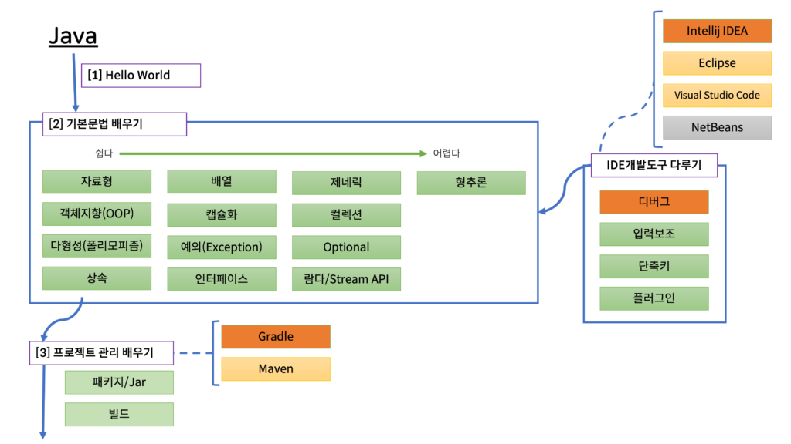

Back-end RoadMap
백엔드 개발자가 되고 싶은 이유
- 서버를 관리하는게 재밌을 것 같다.
- 오류 하나를 찾아서 고쳤을 때 그 성취감을 느끼고 싶다.
- "백엔드 개발자" 도 좋지만 풀스텍을 목표로 하고 있다.
- 눈에 보이지 않지만 결과로 나타나기 때문에 매력적이다.
- 적성에 더 잘 맞는 듯 하다.
- 웹을 구성하고 꾸미는 데 흥미를 갖지 못 했다.
- 예술적인 능력이 부족하다.
Skills for Back - end
JAVA

Python

JavaScript (Node.Js)